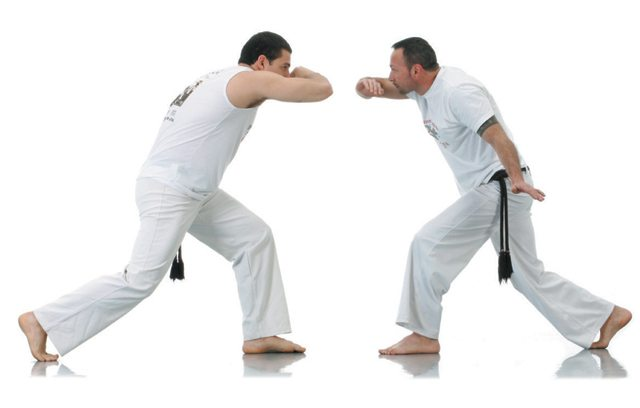
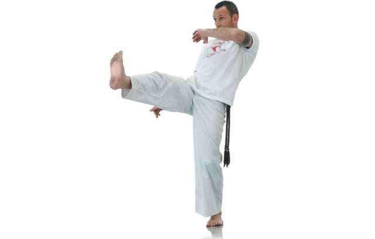
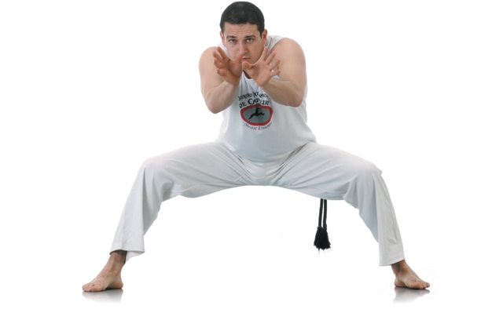
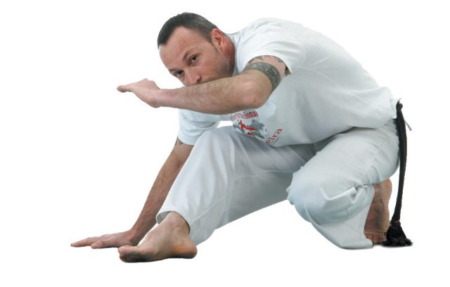
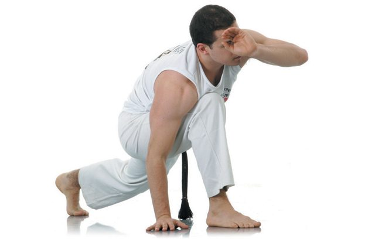

Os movimentos de capoeira são muito chamativos. Os saltos, os rodopios, os malabarismos e os diversos movimentos que são reproduzidos pelos capoeiristas, também chamados de "floreio", são o que fazem a capoeira ser tão diferente das demais artes marciais. Não somente os "floreios", mas os golpes rápidos e violentos, e esquivas que protegem o capoerista frente a um golpe que veio para lhe acertar, mantendo-o em pé, saindo para lá e já pronto para poder revidar.
Hoje em dia aprender capoeira está cada vez mais fácil. Os meios de comunicação vacilitaram a popularização da capoeira e o ensino da mesma. Um grande exemplo é o Contra Mestre Koioty que se aproveitou do alcance do famoso streamer de vídeo, o YouTube, para publicar vídeos de capoeira, compartilhando seu conhecimento e seus ensinamentos.
Diante dessa situação, aqui estão 8 movimentos básicos da capoeira:
|  |
Ginga
É o passo básico, pois é dele que partem os outros movimentos da capoeira. Trata-se de um gingado contínuo do corpo de um lado para o outro, preparado para atacar ou defender. Consiste em levar uma perna e o braço do mesmo lado alternadamente para frente e para trás. Começa com uma passada de perna para trás, levando o braço do mesmo lado para a frente do rosto, protegendo-se. Logo as pernas são igualadas e a outra vai para trás, levando o braço do mesmo lado para a frente do rosto e assim sucessivamente. A cabeça também balança para um lado e para o outro, acompanhando a perna e o braço.
|  |
Bênção
Chute que empurra o adversário. Não se golpeia, apenas o empurra com a sola do pé.

|
Desvio de Frente
Movimento de defesa para evitar um golpe do rival. Há esquivas de vários tipos; as de emergência são intuitivas e permitem raciocinar mais rápido que a ginga.
|  |
Cadeira (ou paralela)
É uma posição de estudo do adversário e o início de um movimento de ataque ou defesa. A posição tem esse nome, pois é como se você estivesse sentado em uma cadeira, com as pernas abertas e flexionadas e as mãos para a frente do corpo.
|  |
Negativa
É uma posição para se esquivar ou atacar e a origem de muitos outros movimentos. É praticamente uma forma de se esquivar dos chutes, mas é realizada como um movimento estético de transição. Flexione-se sobre uma perna e dobre a outra para trás. É importante que mantenha o glúteo sobre o calcanhar. Apoie no chão a mesma mão da perna que está flexionada para se equilibrar e, com o braço oposto, proteja o rosto.
|  |
Descida Básica (ou apanhado)
Usada para evitar um golpe e iniciar movimentos de chão. Da posição de ginga, flexione o joelho e apoie uma mão no solo.